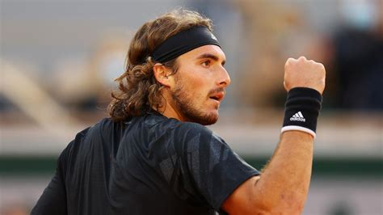

|
N°1 - Novak Djokovic - Serbie |
| |
N°2 - Daniil Medvedev - Russie |
 |
N°3 - Rafael Nadal - Espagne |
| |
N°4 - Alexander Zverev - Allemagne |
|  |
N°5 - Stefanos Tsitsipas - Grèce |
| |
N°6 - Matteo Berrettini - Italie |
| |
N°7 - Andrey Rublev - Russie |
|
N°8 - Casper Ruud- Norvège |
| |
N°9 - Félix Auger-Aliassime - Canada |
| |
N°10 - Hubert Hurkacz - Pologne |
| |
N°11 - Jannik Sinnerz - Italie |
| |
N°12 - Cameron Norrie - Grande-Bretagne |
| |
N°13 - Taylor Fritz - Etats-Unis |
| |
N°14 - Denis Shapovalov - Canada |
| |
N°15 - Diego Schwartzman - Argentine |
| |
N°16 - Carlos Alcaraz - Espagne |
| |
N°17 - Roberto Bautista Agut - Espagne |
| |
N°18 - Reilly Opelka - Etats-Unis |
| |
N°19 - Pablo Carreno Busta - Espagne |
| |
N°20 - Nikoloz Basilashvili- Géorgie |